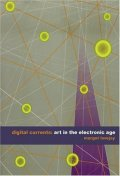

|  |
| About IR |
| Editors |
| Author instructions |
| Copyright |
| Author index |
| Subject index |
| Search |
| Reviews |
| Register |
| Home |
Lovejoy, Margot. Digital currents: art in the electronic age. London: Routledge, 2004. 376 p. ISBN 0415307813. £60.00
As a reviewer seeing the title Digital currents: art in the electronic age I expected new insights into art history and illustrations that I never have seen before. My disappointment when I met the usual artists and usual illustrations on first glancing through this book by Margot Lovejoy, was therefore great, and I did not fully recover from this setback during reading. That is why I immediately must stress that Lovejoy is knowledgeable, that her introduction into contemporary digital art is interesting, even if I find her dealing with western art history since the beginning of modernism too conventional. This is a revised version of Postmodern currents: art and artist in the age of electronic media, first published 1989, which perhaps explains my feeling that it is outdated. For me, looking at art from a Swedish point of view, both text and illustrations centre too narrowly upon a 'contemporary' art world delimited by a North American perspective, and I also believe that Lovejoy's definition of 'contemporary' restricts her selection.
The first part of the book is about sources, and the second about media. In Sources the reader is introduced to modernism, its ideology and reflections in art. If you have read any standard art history dealing with this period, Lovejoy's text will not bring much new.
The second part is about art in an era defined as 'postmodernism', or the age of digital simulation (one subtitle). The theoretical discussion on modernism and postmodernism is not up to date; this is where the feeling that the core of the book is fifteen years old was strongest. Nearly all photos are in black and white and this adds to the feeling of obsoleteness. Black and white photography is coming back as a reaction against too much colour everywhere, but this does not apply when the aim of the photos is to record coloured paintings. Here, you get only eight colour-plates, thrown together in the middle, out of 340 pages. All colour photos show video or multimedia works, which means that the reader has to guess the colours in pictures by Jan Vermeer, Marcel Duchamp and Robert Rauschenberg.
There is also a Digital Currents Website (www.digitalcurrents.com) the concept of which 'is to develop a functioning companion to the book in a form that can be continuously updated in line with the rapid changes going on around us both culturally and technologically' (p. ). Here you find links to many artists working digitally. Many of those homepages were impossible to reach when I tried, but this is probably the fault of the artists and not of Lovejoy or her publishing house Routledge.
At the Website there is a useful glossary, and a figure presenting periods, movements, inventions and events in art history. The Website also introduces the questions that Lovejoy deals with: What is the difference between using technological media as a tool or as a medium?, What happens to the role of the artist when their work includes the participation of others?, When did theory become subject matter for art and why?, How has the function of art changed in the last century? and What is simulacrum, simulation, hypermedia and virtual reality?. For me this presentation of her questions was much more illuminating than her answers in the book. Some of these questions might shed a new understanding of information technologies for information specialists.
To summarize: this might be an interesting or useful book, but it is not entirely up to date even if it is revised many times since 1989. There must be better books available in the flood from publishing houses.
Lena Waldau
Swedish School of Library and Information Science
Borå, Sweden
October, 2004
How to cite this review
Waldau, L. (2004). Review of: Lovejoy, Margot. Digital currents: art in the electronic age. London: Routledge, 2004. Information Research, 10(1), review no. R150 [Available at: http://informationr.net/ir/reviews/revs150.html]